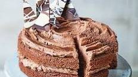

Chocolate Cake

Description
A moist and decadent chocolate cake that is perfect for any occasion.
Ingredients
- 2 cups all-purpose flour
- 2 cups granulated sugar
- ¾ cup unsweetened cocoa powder
- 2 teaspoons baking powder
- 1½ teaspoons baking soda
- 1 teaspoon salt
- 2 eggs
- 1 cup milk
- ½ cup vegetable oil
- 2 teaspoons vanilla extract
- 1 cup boiling water
Steps
- Preheat the oven to 350°F (175°C). Grease and flour two 9-inch round cake pans.
- In a large mixing bowl, sift together the flour, sugar, cocoa powder, baking powder, baking soda, and salt.
- Add the eggs, milk, vegetable oil, and vanilla extract to the dry ingredients. Mix well until combined.
- Slowly pour in the boiling water while stirring the batter. The batter will be thin, but that's normal.
- Pour the batter evenly into the prepared cake pans.
- Bake in the preheated oven for 30 to 35 minutes, or until a toothpick inserted into the center comes out clean.
- Remove the cakes from the oven and let them cool in the pans for about 10 minutes. Then transfer them to a wire rack to cool completely.
- Once the cakes are completely cooled, you can frost them with your favorite frosting or serve them as is.
- Enjoy your delicious homemade chocolate cake!